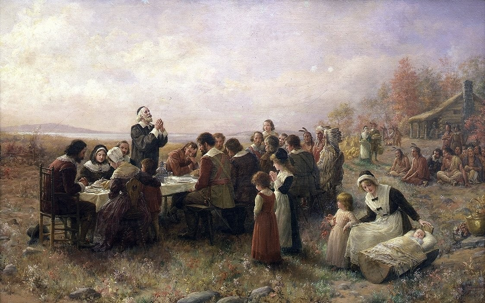
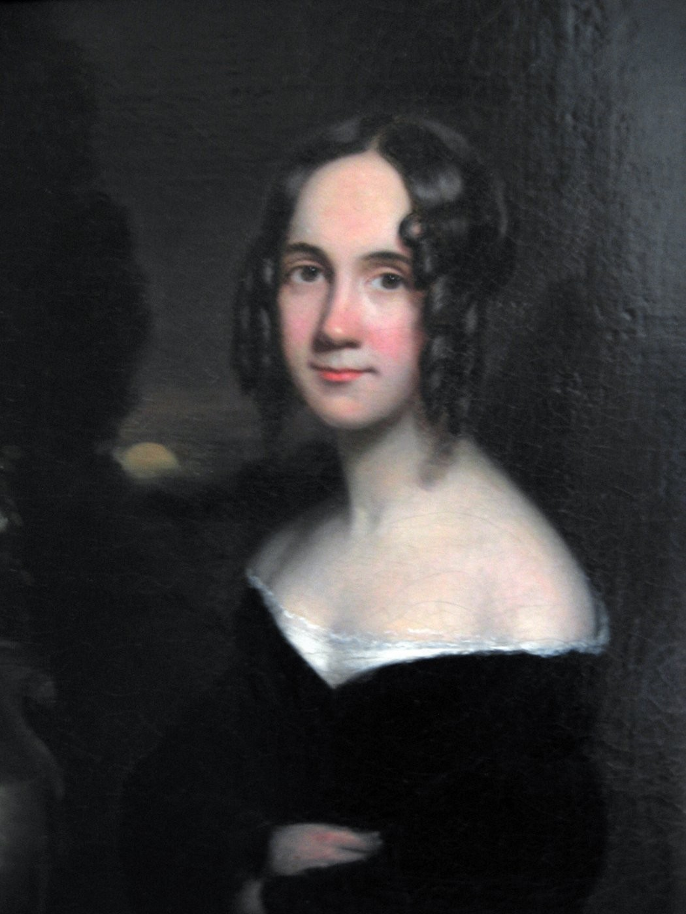
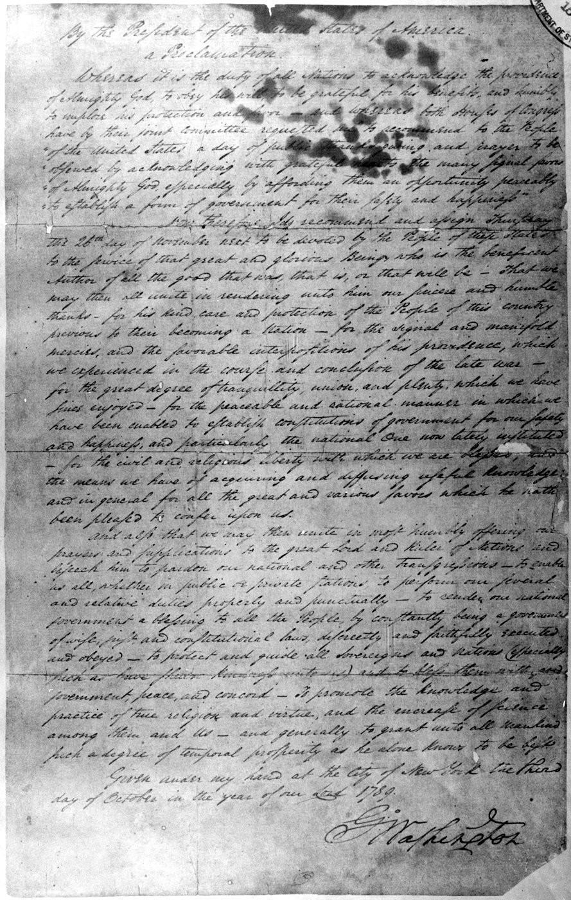
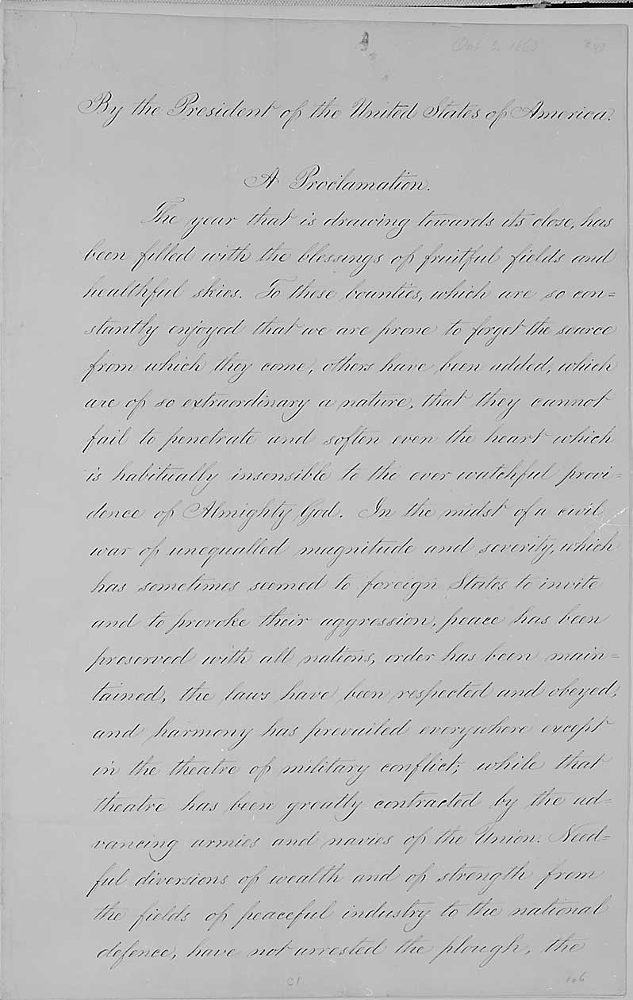
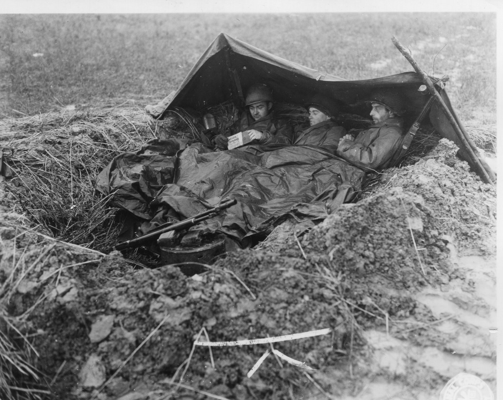

Thanksgiving · History
With One Heart and One Voice: How Americans Learned to Give Thanks
From a harvest table at Plymouth to a cold army camp, and on to our own Texas tables, Americans have long set aside a day to say thank you, and to say it together.

On Thursday, Nov. 26, families in Brownsboro and Chandler will gather around the table. Some may sit where their parents sat. Some may make room for a neighbor.
They will be doing what Americans have done for a very long time. They stop. They give thanks. And they do it together.
A Harvest Shared
The Mayflower reached Plymouth in December 1620. The first winter was cruel. Sickness spread through the settlement. William Bradford later wrote that “of one hundred and odd persons, scarce fifty remained.”
Help came from Tisquantum, a Wampanoag man the English called Squanto. His own story was full of loss. He had been taken from his homeland and sent across the sea. When he finally came home in 1619, disease had taken nearly all of his people at Patuxet, the place the settlers named Plymouth. Bradford said he showed them “how to set their corn, where to take fish.”
By autumn, the crops were in. Edward Winslow wrote home that “our harvest being gotten in, our governor sent four men on fowling, that so we might after a special manner rejoice together.”
Ousamequin, the Wampanoag leader known as the Massasoit, came with about 90 of his men. For three days, they “entertained and feasted.” The guests brought five deer to share with the colony’s leaders.
Everything we know about those days comes from English writers. The Wampanoag left no written account of their own. Still, Winslow’s gratitude is plain: “by the goodness of God, we are so far from want, that we often wish you partakers of our plenty.”
An Early Thank-You on the Rio Grande
Texas has a thanksgiving story that is older than Plymouth.
Who: Settlers from Spain, with Juan de Oñate as their leader, on a long trip north.
When: The spring of 1598.
Where: The Rio Grande, near today’s San Elizario, southeast of El Paso.
What happened: Oñate’s party crossed the Chihuahuan Desert. The scouts went four days without water before they reached the river. The rest of the company joined them a few days later. Then they held a feast. They ate fish and waterfowl from the river. They invited the Native people who lived there as guests. And they gave formal thanks to God for bringing them through.
Why it matters: That was 23 years earlier than the Pilgrims’ feast. Texas lawmakers honored the day in 1990. Many historians point to it as the earliest thanksgiving feast in what is now the United States. San Elizario still remembers it each spring.
It reminds us that giving thanks after a hard road is an old story here in Texas, too.
Thanks in a Cold Camp
In 1777, the young nation was still fighting for its freedom. After the British surrender at Saratoga, Congress asked the states to set aside Thursday, Dec. 18, for “Solemn Thanksgiving and Praise.” It asked for “the greatest of all human blessings,” which it named as independence and peace.
General Washington’s army was camped in Pennsylvania, just before Valley Forge. He thanked his soldiers for their “fortitude and patience.” He said he trusted they would, “with one heart, and one mind,” rise above every hardship.
The table was nearly bare. Lt. Col. Henry Dearborn wrote that his men had gone three days without bread or flour and were “Laying on the Cold Ground.” Even so, he wrote: “all we have to be thankful for is that we are alive & not in the Grave with many of our friends.”
A Nation Gives Thanks
By 1789, independence was won and the Constitution was in force. On Oct. 3, President Washington called for a national day of thanks on Thursday, Nov. 26. He gave thanks “for the civil and religious liberty with which we are blessed.”
Later presidents made their own calls for thanks. But the date kept changing from year to year.
One Woman’s Pen
Sarah Josepha Hale wanted to fix that. She was a New Hampshire native who raised five children after her husband died young. She wrote “Mary Had a Little Lamb” and edited Godey’s Lady’s Book, a popular women’s journal.
By her own count, she had asked for one national Thanksgiving “for the last fifteen years.” She wrote to governors and printed her case in her magazine.

On Sept. 28, 1863, she wrote to President Lincoln. She asked him to make Thanksgiving “a National and fixed Union Festival.”
Thanks in a Time of War
The Civil War was in its third year. Gettysburg was three months behind. Five days after Hale’s letter, on Oct. 3, 1863, Lincoln answered.
He invited Americans “in every part of the United States, and also those who are at sea and those who are sojourning in foreign lands” to give thanks on the last Thursday of November.
His proclamation begins with blessings: “The year that is drawing towards its close, has been filled with the blessings of fruitful fields and healthful skies.” He asked that they be thanked for “as with one heart and one voice by the whole American People.” He also asked the country to remember “all those who have become widows, orphans, mourners or sufferers.”
After 1863, the last Thursday of November became the nation’s Thanksgiving.


Which Thursday?
In 1939, November had five Thursdays. President Franklin D. Roosevelt moved the holiday up one week. He hoped a longer shopping season would help the country’s recovery from hard times.
Not every state agreed. For two years, Americans gave thanks on two different Thursdays. In 1939, Texas, Colorado and Mississippi simply kept both days.
Congress settled it. On Dec. 26, 1941, less than three weeks after Pearl Harbor, Roosevelt signed a resolution naming the fourth Thursday of November.
Texas held to the last Thursday. A 1951 state law made that official. In 1956, a report from Dallas began, “Texas is blessed with two Thanksgivings this year.” A 1957 law, in effect by 1958, brought Texas in line with the rest of the nation.
Far From Home, Still Together
By Thanksgiving 1944, the nation was at war again. Soldiers were far from home.
In Italy, five officers who had been promoted in combat went back to the infantry company they once served in. They came just to share Thanksgiving dinner with their old company.
In France, three infantrymen ate K rations in a dugout on Thanksgiving Day. An Army caption said they would be relieved later that evening to join their unit for Thanksgiving dinner.

In the Presidents’ Own Words
Presidents have long issued a Thanksgiving proclamation. The words change. The heart of the message stays the same.
In 1941, Franklin Roosevelt thanked God for “the continuance of those homely joys and satisfactions which enrich our lives.”
In 1947, Harry Truman hoped Americans would give thanks with “sympathy for those who lack abundance.” In 1952, he asked all Americans to give thanks “each in his own way, but together as a whole people.”
In 1953, Dwight Eisenhower gave thanks for “the courage and vision of our forebears who settled a wilderness and founded a Nation.” He also gave thanks for “the unity of spirit which has made our country strong.”
In 1963, John F. Kennedy urged Americans to gather “in homes blessed by family affection.” He wrote that “the highest appreciation is not to utter words but to live by them.”
In 1987, Ronald Reagan reminded the country that Americans have stopped to thank God “in log cabins, country churches, cathedrals, homes, and halls.”
Different times, different leaders. One shared idea: gratitude is better when it is shared.
Where the Turkey Pardon Came From
Turkeys have been gifts to presidents since the 1870s. Horace Vose, a poultry dealer from Rhode Island, started sending his best birds to the president. People across the country soon joined in.
In December 1947, the National Turkey Federation gave President Truman a 47-pound turkey. Many people say Truman began the pardon. But the Truman Library says it has found no record that he ever pardoned a turkey. He sometimes said his gift turkeys were meant for his own family’s meal.
On Nov. 19, 1963, President Kennedy received a Thanksgiving turkey in the Rose Garden. He said, “Let’s keep him going.”
In 1987, President Reagan received a turkey named Charlie, who was headed to a pet farm. Reporters kept asking about a different kind of pardon. Reagan joked, “If they’d given me a different answer on Charlie and his future, I would have pardoned him.”
Two years later, on Nov. 17, 1989, President George H.W. Bush made it official. At the White House, he promised the turkey would never become anyone’s dinner, because “he’s granted a Presidential pardon as of right now.” The bird would spend the rest of his life “on a children’s farm not far from here.”
Every president since has kept the custom. It is a lighthearted end to a very old tradition of giving thanks.
Our Table, Our Thanks
Thanksgiving was never about perfect people or easy years. It began with a hungry colony. It grew through a cold camp, a divided country and soldiers far from home. Each time, people stopped to say thank you: to God, and to the people beside them.
This year, we take our place in that long line. We will pass the dressing and the pecan pie. We will look around our tables at family, friends and neighbors, in Brownsboro, in Chandler and beyond.
May we give thanks the way Lincoln hoped the nation would in 1863: “as with one heart and one voice.”